- 00 学习指南 如何学习这门编译原理实战课？.md.html
- 00 开篇词 在真实世界的编译器中游历.md.html
- 01 编译的全过程都悄悄做了哪些事情？.md.html
- 02 词法分析：用两种方式构造有限自动机.md.html
- 03 语法分析：两个基本功和两种算法思路.md.html
- 04 语义分析：让程序符合语义规则.md.html
- 05 运行时机制：程序如何运行，你有发言权.md.html
- 06 中间代码：不是只有一副面孔.md.html
- 07 代码优化：跟编译器做朋友，让你的代码飞起来.md.html
- 08 代码生成：如何实现机器相关的优化？.md.html
- 09 Java编译器（一）：手写的编译器有什么优势？.md.html
- 10 Java编译器（二）：语法分析之后，还要做些什么？.md.html
- 11 Java编译器（三）：属性分析和数据流分析.md.html
- 12 Java编译器（四）：去除语法糖和生成字节码.md.html
- 13 Java JIT编译器（一）：动手修改Graal编译器.md.html
- 14 Java JIT编译器（二）：Sea of Nodes为何如此强大？.md.html
- 15 Java JIT编译器（三）：探究内联和逃逸分析的算法原理.md.html
- 16 Java JIT编译器（四）：Graal的后端是如何工作的？.md.html
- 17 Python编译器（一）：如何用工具生成编译器？.md.html
- 18 Python编译器（二）：从AST到字节码.md.html
- 19 Python编译器（三）：运行时机制.md.html
- 20 JavaScript编译器（一）：V8的解析和编译过程.md.html
- 21 JavaScript编译器（二）：V8的解释器和优化编译器.md.html
- 22 Julia编译器（一）：如何让动态语言性能很高？.md.html
- 23 Julia编译器（二）：如何利用LLVM的优化和后端功能？.md.html
- 24 Go语言编译器：把它当作教科书吧.md.html
- 25 MySQL编译器（一）：解析一条SQL语句的执行过程.md.html
- 26 MySQL编译器（二）：编译技术如何帮你提升数据库性能？.md.html
- 27 课前导读：学习现代语言设计的正确姿势.md.html
- 28 前端总结：语言设计也有人机工程学.md.html
- 29 中端总结：不遗余力地进行代码优化.md.html
- 30 后端总结：充分发挥硬件的能力.md.html
- 31 运行时（一）：从0到语言级的虚拟化.md.html
- 32 运行时（二）：垃圾收集与语言的特性有关吗？.md.html
- 33 并发中的编译技术（一）：如何从语言层面支持线程？.md.html
- 34 并发中的编译技术（二）：如何从语言层面支持协程？.md.html
- 35 并发中的编译技术（三）：Erlang语言厉害在哪里？.md.html
- 36 高级特性（一）：揭秘元编程的实现机制.md.html
- 37 高级特性（二）：揭秘泛型编程的实现机制.md.html
- 38 综合实现（一）：如何实现面向对象编程？.md.html
- 39 综合实现（二）：如何实现函数式编程？.md.html
- 40 成果检验：方舟编译器的优势在哪里？.md.html
- 不定期加餐1 远程办公，需要你我具备什么样的素质？.md.html
- 不定期加餐2 学习技术的过程，其实是训练心理素质的过程.md.html
- 不定期加餐3 这几年，打动我的两本好书.md.html
- 不定期加餐4 从身边的牛人身上，我学到的一些优秀品质.md.html
- 不定期加餐5 借助实例，探究C++编译器的内部机制.md.html
- 划重点 7种编译器的核心概念与算法.md.html
- 期末答疑与总结 再次审视学习编译原理的作用.md.html
- 热点问题答疑 如何吃透7种真实的编译器？.md.html
- 用户故事 易昊：程序员不止有Bug和加班，还有诗和远方.md.html
- 知识地图 一起来复习编译技术核心概念与算法.md.html
- 结束语 实战是唯一标准！.md.html
- 捐赠
16 Java JIT编译器（四）：Graal的后端是如何工作的？
你好，我是宫文学。
前面两讲中，我介绍了Sea of Nodes类型的HIR，以及基于HIR的各种分析处理，这可以看做是编译器的中端。
可编译器最终还是要生成机器码的。那么，这个过程是怎么实现的呢？与硬件架构相关的LIR是什么样子的呢？指令选择是怎么做的呢？
这一讲，我就带你了解Graal编译器的后端功能，回答以上这些问题，破除你对后端处理过程的神秘感。
首先，我们来直观地了解一下后端处理的流程。
后端的处理流程
在第14讲中，我们在运行Java示例程序的时候（比如atLeastTen()方法），使用了“-Dgraal.Dump=:5”的选项，这个选项会dump出整个编译过程最详细的信息。
对于HIR的处理过程，程序会通过网络端口，dump到IdealGraphVisualizer里面。而后端的处理过程，缺省则会dump到工作目录下的一个“graal_dumps”子目录下。你可以用文本编辑器打开查看里面的信息。
//至少返回10
public int atLeastTen(int a){
if (a < 10)
return 10;
else
return a;
}
不过，你还可以再偷懒一下，使用一个图形工具c1visualizer来查看。
补充：c1visualizer原本是用于查看Hopspot的C1编译器（也就是客户端编译器）的LIR的工具，这也就是说，Graal的LIR和C1的是一样的。另外，该工具不能用太高版本的JDK运行，我用的是JDK1.8。
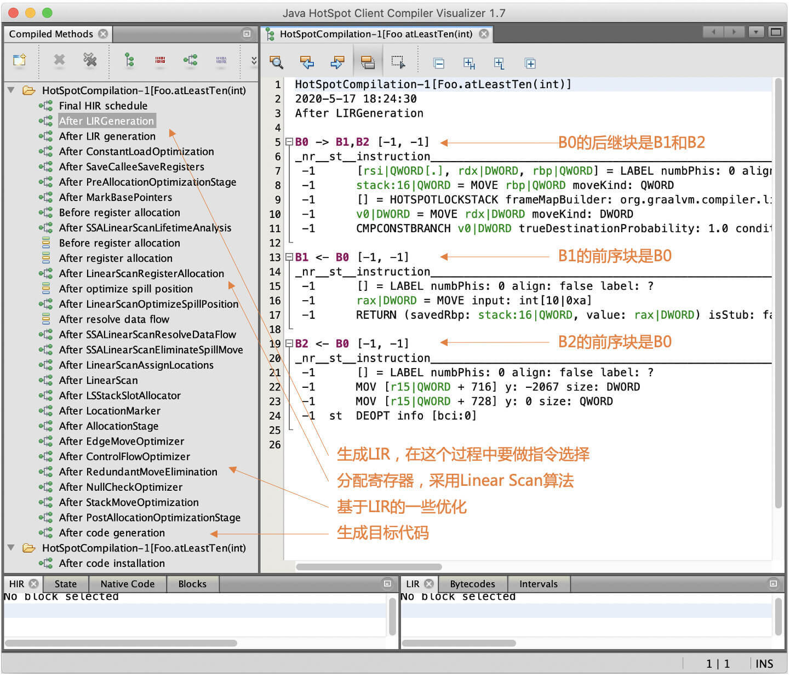
图1：atLeatTen()方法对应的LIR
在窗口的左侧，你能看到后端的处理流程。
- 首先是把HIR做最后一次排序（HIR Final Schedule），这个处理会把HIR节点分配到基本块，并且排序；
- 第二是生成LIR，在这个过程中要做指令选择；
- 第三，寄存器分配工作，Graal采用的算法是线性扫描（Linear Scan）；
- 第四，是基于LIR的一些优化工作，比如ControlFlowOptimizer等；
- 最后一个步骤，是生成目标代码。
接下来，我们来认识一下这个LIR：它是怎样生成的，用什么数据结构保存的，以及都有什么特点。
认识LIR
在对HIR的处理过程中，前期（High Tier、Mid Tier）基本上都是与硬件无关。到了后期（Low Tier），你会看到IR中的一些节点逐步开始带有硬件的特征，比如上一讲中，计算AMD64地址的节点。而LIR就更加反映目标硬件的特征了，基本上可以跟机器码一对一地翻译。所以，从HIR生成LIR的过程，就要做指令选择。
我把与LIR相关的包和类整理成了类图，里面划分成了三个包，分别包含了与HIR、LIR和CFG有关的类。你可以重点看看它们之间的相互关系。
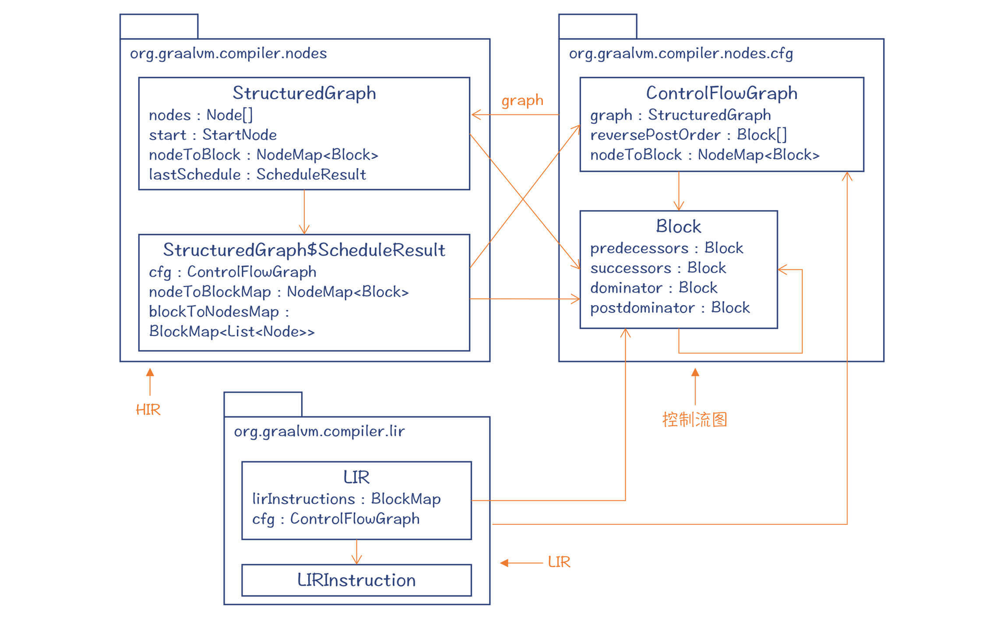
图2：HIR、LIR和CFG的关联关系
在HIR的最后的处理阶段，程序会通过一个Schedule过程，把HIR节点排序，并放到控制流图中，为生成LIR和目标代码做准备。我之前说过，HIR的一大好处，就是那些浮动节点，可以最大程度地免受控制流的约束。但在最后生成的目标代码中，我们还是要把每行指令归属到某个具体的基本块的。而且，基本块中的HIR节点是按照顺序排列的，在ScheduleResult中保存着这个顺序（blockToNodesMap中顺序保存了每个Block中的节点）。
你要注意，这里所说的Schedule，跟编译器后端的指令排序不是一回事儿。这里是把图变成线性的程序；而编译器后端的指令排序（也叫做Schedule），则是为了实现指令级并行的优化。
当然，把HIR节点划分到不同的基本块，优化程度是不同的。比如，与循环无关的代码，放在循环内部和外部都是可以的，但显然放在循环外部更好一些。把HIR节点排序的Schedule算法，复杂度比较高，所以使用了很多启发式的规则。刚才提到的把循环无关代码放在循环外面，就是一种启发式的规则。
图2中的ControlFlowGraph类和Block类构成了控制流图，控制流图和最后阶段的HIR是互相引用的。这样，你就可以知道HIR中的每个节点属于哪个基本块，也可以知道每个基本块中包含的HIR节点。
做完Schedule以后，接着就会生成LIR。与声明式的HIR不同，LIR是命令式的，由一行行指令构成。
图1显示的是Foo.atLeatTen方法对应的LIR。你会看到一个控制流图（CFG），里面有三个基本块。B0是B1和B2的前序基本块，B0中的最后一个语句是分支语句（基本块中，只有最后一个语句才可以是导致指令跳转的语句）。
LIR中的指令是放到基本块中的，LIR对象的LIRInstructions属性中，保存了每个基本块中的指令列表。
OK，那接下来，我们来看看LIR的指令都有哪些，它们都有什么特点。
LIRInstruction的子类，主要放在三个包中，你可以看看下面的类图。
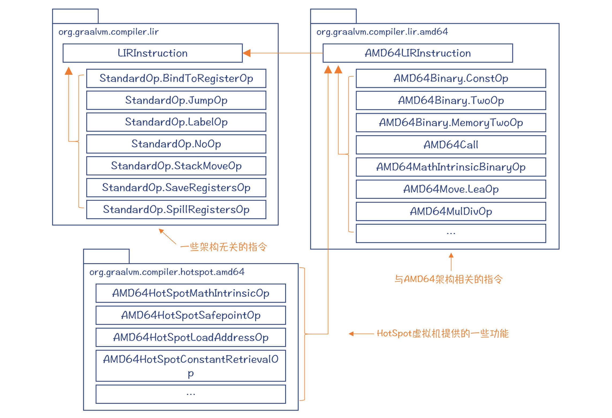
图3：LIR中的指令类型
首先，在org.graalvm.compiler.lir包中，声明了一些与架构无关的指令，比如跳转指令、标签指令等。因为无论什么架构的CPU，一定都会有跳转指令，也一定有作为跳转目标的标签。
然后，在org.graalvm.compiler.lir.amd64包中，声明了几十个AMD64架构的指令，为了降低你的阅读负担，这里我只列出了有代表性的几个。这些指令是LIR代码中的主体。
最后，在org.graalvm.compiler.hotspot.amd64包中，也声明了几个指令。这几个指令是利用HotSpot虚拟机的功能实现的。比如，要获取某个类的定义的地址，只能由虚拟机提供。
好了，通过这样的一个分析，你应该对LIR有更加具体的认识了：LIR中的指令，大多数是与架构相关的。这样才适合运行后端的一些算法，比如指令选择、寄存器分配等。你也可以据此推测，其他编译器的LIR，差不多也是这个特点。
接下来，我们就来了解一下Graal编译器是如何生成LIR，并且在这个过程中，它是如何实现指令选择的。
生成LIR及指令选择
我们已经知道了，Graal在生成LIR的过程中，要进行指令选择。
我们先看一下Graal对一个简单的示例程序Foo.add1，是如何生成LIR的。
public static int add1(int x, int y){
return x + y + 10;
}
这个示例程序，在转LIR之前，它的HIR是下面这样。其中有两个加法节点，操作数包括了参数（ParameterNode）和常数（ConstantNode）两种类型。最后是一个Return节点。这个例子足够简单。实际上，它简单到只是一棵树，而不是图。
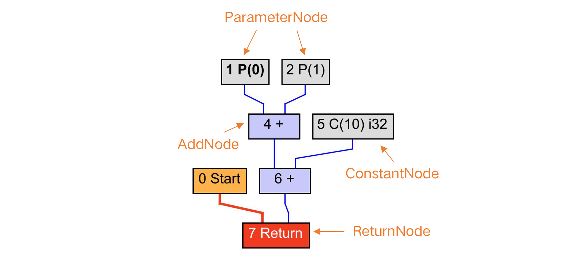
图4：add1方法对应的HIR
你可以想一下，对于这么简单的一棵树，编译器要如何生成指令呢？
最简单的方法，是做一个语法制导的简单翻译。我们可以深度遍历这棵树，针对不同的节点，分别使用不同的规则来生成指令。比如：
- 在遇到参数节点的时候，我们要搞清楚它的存放位置。因为参数要么是在寄存器中，要么是在栈中，可以直接用于各种计算。
- 遇到常数节点的时候，我们记下这个常数，用于在下一条指令中作为立即数使用。
- 在遇到加法节点的时候，生成一个add指令，左右两棵子树的计算结果分别是其操作数。在处理到6号节点的时候，可以不用add指令，而是生成一个lea指令，这样可以直接把结果写入rax寄存器，作为返回值。这算是一个优化，因为可以减少一次从寄存器到寄存器的拷贝工作。
- 遇到Return节点的时候，看看其子树的计算结果是否放在rax寄存器中。如果不是，那么就要生成一个mov指令，把返回值放入rax寄存器，然后再生成一条返回指令（ret）。通常，在返回之前，编译器还要做一些栈帧的处理工作，把栈指针还原。
对于这个简单的例子来说，按照这个翻译规则来生成代码，是完全没有问题的。你可以看下，Graal生成LIR，然后再基于LIR生成的目标代码的示例程序，它只有三行，足够精简和优化：
add esi,edx #将参数1加到参数0上，结果保存在esi寄存器
lea eax,[rsi+0xa] #将rsi加10,结果放入eax寄存器
ret #返回
补充：-
1.我去掉了一些额外的汇编代码，比如用于跟JVM握手，让JVM有机会做垃圾收集的代码。-
2. lea指令原本是用于计算地址的。上面的指令的意思是把rsi寄存器的值作为地址，然后再偏移10个字节，把新的地址放到eax寄存器。-
x86计算机支持间接寻址方式：偏移量（基址，索引值，字节数）-
其地址是：基址 + 索引值*字节数 + 偏移量-
所以，你可以利用这个特点，计算出a+b*c+d的值。但c（也就是字节数）只能取1、2、4、8。就算让c取1，那也能完成a+b+c的计算。并且，它还可以在另一个操作数里指定把结果写到哪个寄存器，而不像add指令，只能从一个操作数加到另一个操作数上。这些优点，使得x86汇编中经常使用lea指令做加法计算。
Graal编译器实际上大致也是这么做的。
首先，它通过Schedule的步骤，把HIR的节点排序，并放入基本块。对于这个简单的程序，只有一个基本块。
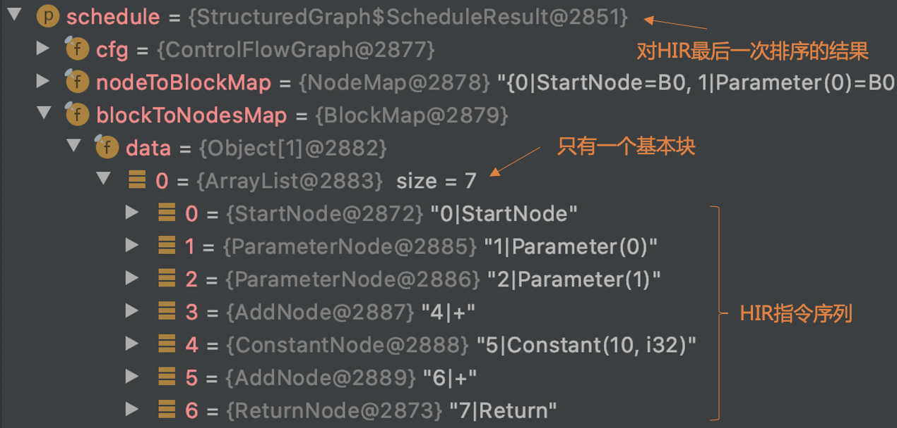
接着，编译器会对基本块中的节点做遍历（参考：NodeLIRBuilder.java中的代码）。针对每个节点转换（Lower）成LIR。
- 把参数节点转换成了MoveFromRegOp指令，在示例程序里，其实这是冗余的，因为可以直接把存放参数的两个寄存器，用于加法计算；
- 把第一个加法节点转换成了CommutativeTwoOp指令；
- 把第二个加法节点转换成了LeaOp指令，并且把常数节点变成了LeaOp指令的操作数；
- Return节点生成了两条指令，一条是把加法运算的值放到rax寄存器，作为返回值，这条我们知道是冗余的，所以就要看看后面的优化算法如何消除这个冗余；第二条是返回指令。
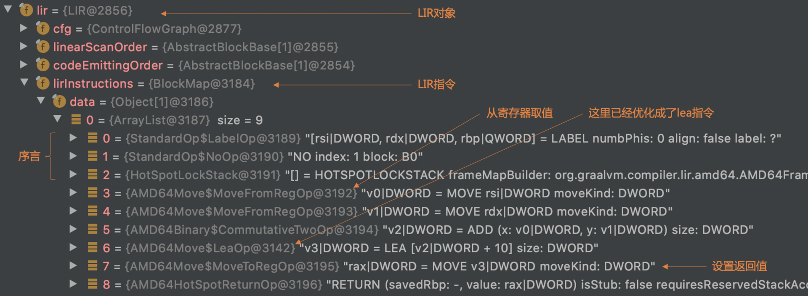
一开始生成的LIR，使用的寄存器都是虚拟的寄存器名称，用v1、v2、v3这些来表示。等把这些虚拟的寄存器对应到具体的物理寄存器以后，就可以消除掉刚才提到的冗余代码了。
我们在c1visualizer中检查一下优化过程，可以发现这是在LinearScanAssignLocationsPhase做的优化。加法指令中对参数1和参数2的引用，变成了对物理寄存器的引用，从而优化掉了两条指令。lea指令中的返回值，也直接赋给了rax寄存器。这样呢，也就省掉了把计算结果mov到rax的指令。这样优化后的LIR，基本上已经等价于目标代码了。
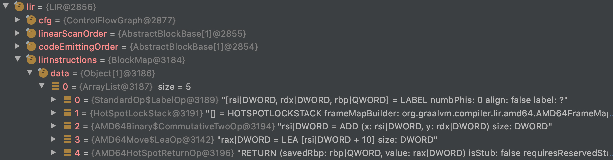
好了，通过这样一个分析，你应该理解了从HIR生成LIR的过程。但是还有个问题，这中间似乎也没有做什么指令选择呀？唯一的一处，就是把加法操作优化成了lea指令。而这个也比较简单，基于单独的Add节点就能做出这个优化选择。那么，更复杂的模式匹配是怎么做的呢？
不要着急，我们接下来就看看Graal是如何实现复杂一点的指令选择的。这一次，我们用了另一个示例程序：Foo.addMemory方法。它把一个类成员变量m和参数a相加。
public class Foo{
static int m = 3;
public static int addMemory(int a){
return m + a;
}
...
}
这跟add1方法有所不同，因为它要使用一个成员变量，所以一定要访问内存。而add1方法的所有操作，都是在寄存器里完成的，是“空中作业”，根本不在内存里落地。
我们来看一下这个示例程序对应的HIR。其中一个黄色节点“Read#Foo.m”，是读取内存的节点，也就是读取成员变量m的值。而这又需要通过AMD64Address节点来计算m的地址。由于m是个静态成员，所以它的地址要通过类的地址加上一定的偏移量来计算。
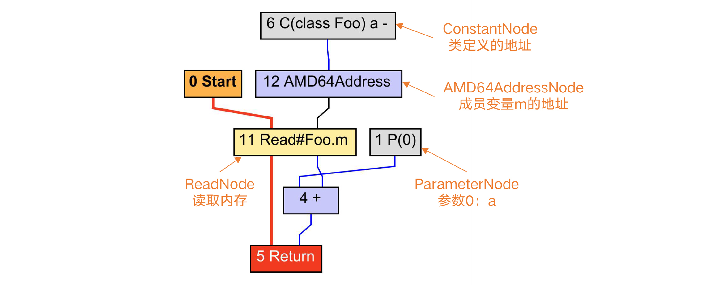
图5：addMemory()方法对应的HIR
这里有一个小的知识点，我在第14讲中也提过：对内存操作的节点（如图中的ReadNode），是要加入控制流中的。因为内存里的值，会由于别的操作而改变。如果你把它变成浮动节点，就有可能破坏对内存读写的顺序，从而出现错误。
回到主题，我们来看看怎么为addMemory生成LIR。
如果还是像处理add1方法一样，那么你就会这么做：
- 计算m变量的地址，并放入一个寄存器；
- 基于这个地址，取出m的值，放入另一个寄存器；
- 把m的值和参数a做加法。
不过这样做，至少要生成3条指令。
在第8讲中我曾经讲过，像AMD64这样使用复杂指令集（CICS）的架构，具有强大的地址表达能力，并且可以在做算术运算的时候，直接使用内存。所以上面的三条指令，其实能够缩减成一条指令。
这就需要编译器把刚才这种基于内存访问做加法的模式识别出来，以便生成优化的LIR，进而生成优化的目标代码。这也是指令选择算法要完成的任务。可是，如何识别这种模式呢？
跟踪Graal的执行，你会发现HIR在生成LIR之前，有一个对基本块中的节点做模式匹配的操作，进而又调用匹配复杂表达式（matchComplexExpressions）。在这里，编译器会把节点跟一个个匹配规则（MatchStatement）做匹配。注意，匹配的时候是逆序做的，相当于从树根开始遍历。
在匹配加法节点的时候，Graal匹配上了一个MatchStatement，这个规则的名字叫“addMemory”，是专门针对涉及内存操作的加法运算提供的一个匹配规则。这个MatchStatement包含了一个匹配模式（MatchPattern），该模式的要求是：
- 节点类型是AddNode；
- 第一个输入（也就是子节点）是一个值节点（value）；
- 第二个输入是一个ReadNode，而且必须只有一个使用者（singleUser=true）。
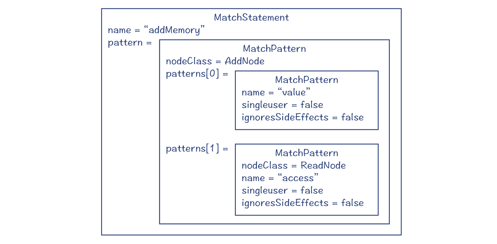
图6：匹配规则和匹配模式
这个MatchStatement是在AMD64NodeMatchRules中用注解生成的。利用这样的一个匹配规则，就能够匹配示例程序中的Add节点。
匹配上以后，Graal会把AddNode和ReadNode做上特殊标记，这样在生成LIR的时候，就会按照新的生成规则。生成的LIR如下：
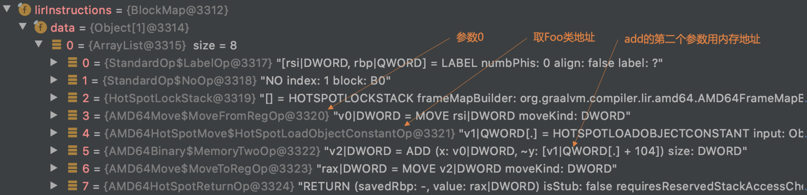
你可以发现，优化后，编译器把取参数a的指令省略掉了，直接使用了传入参数a的寄存器rsi：
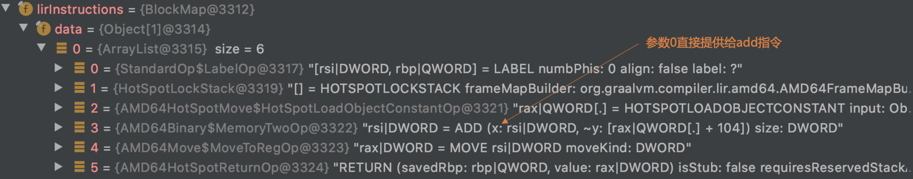
最后生成的目标代码如下：
movabs rax,0x797b00690 #把Foo类的地址放入rax寄存器
add esi,DWORD PTR [rax+0x68] #偏移0x68后，是m的地址。做加法
mov eax,esi #设置返回值
ret #返回
到目前为止，你已经了解了Graal是如何匹配一个模式，并选择优化的指令的了。
你可以看看AMD64NodeMatchRules类，它的里面定义了不少这种匹配规则。通过阅读和理解这些规则，你就会对为什么要做指令选择有更加具体的理解了。
Graal的指令选择算法算是比较简单的。在HotSpot的C2编译器中，指令选择采用的是BURS（Bottom-Up Rewrite System，自底向上的重写系统）。这个算法会更加复杂一点，消耗的时间更长，但优化效果更好一些。
这里我补充一个分享，我曾经请教过ARM公司的研发人员，他们目前认为Graal对针对AArch64的指令选择是比较初级的，你可以参考这个幻灯片。所以，他们也正在帮助Graal做改进。
后端的其他功能
出于突出特色功能的目的，这一讲我着重讲了LIR的特点和指令选择算法。不过在考察编译器的后端的时候，我们通常还要注意一些其他功能，比如寄存器分配算法、指令排序，等等。我这里就把Graal在这些功能上的实现特点，给你简单地介绍一下，你如果有兴趣的话，可以根据我的提示去做深入了解：
- 寄存器分配：Graal采用了线性扫描（Linear Scan）算法。这个算法的特点是速度比较快，但优化效果不如图染色算法。在HotSpot的C2中采用的是后者。
- 指令排序：Graal没有为了实现指令级并行而去做指令排序。这里一个主要原因，是现在的很多CPU都已经支持乱序（out-of-order）执行，再做重排序的收益不大。
- 窥孔优化：Graal在生成LIR的时候，会做一点窥孔优化（AMD64NodeLIRBuilder类的peephole方法）。不过它的优化功能有限，只实现了针对除法和求余数计算的一点优化。
- 从LIR生成目标代码：由于LIR已经跟目标代码很接近了，所以这个翻译过程已经比较简单，没有太难的算法了，需要的只是了解和熟悉汇编代码和调用约定。
课程小结
这一讲，我带你对Graal的后端做了一个直观的认识，让你的后端知识有了第一个真实世界中编译器的参考系。
第一，把LIR从比较抽象的概念中落地。你现在可以确切地知道哪些指令是必须跟架构相关的，而哪些指令可以跟架构无关。
第二，把指令选择算法落地。虽然Graal的指令选择算法并不复杂，但这毕竟提供了一个可以借鉴的思路，是你认知的一个阶梯。如果你仔细阅读代码，你还可以具象地了解到，符合哪些模式的表达式，是可以从指令选择中受益的。这又是一个理论印证实践的点。
我把这讲的思维导图也放在了下面，供你参考。
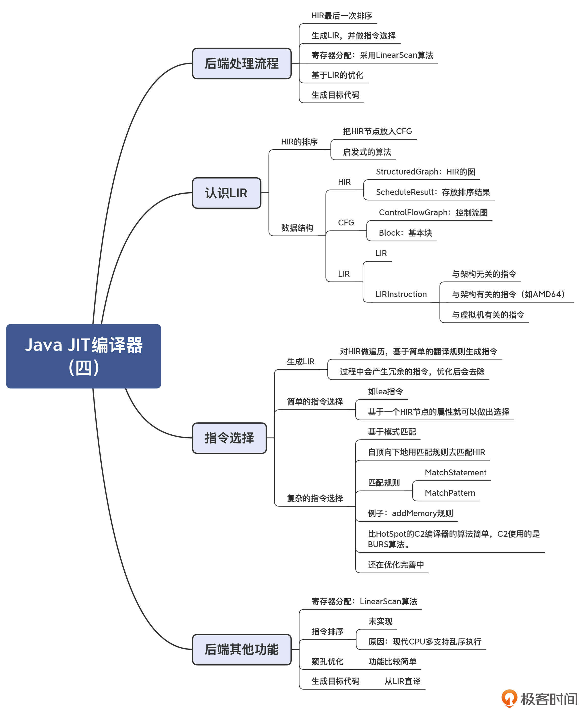
同时，这一讲之后，我们对Java编译器的探讨也就告一段落了。但是，我希望你对它的研究不要停止。
我们讨论的两个编译器（javac和Graal）中的很多知识点，你只要稍微深入挖掘一下，就可以得出不错的成果了。比如，我看到有国外的硕士学生研究了一下HotSpot，就可以发表不错的论文。如果你是在校大学生，我相信你也可以通过顺着这门课程提供的信息做一些研究，从而得到不错的成果。如果是已经工作的同学，我们可以在极客时间的社群（比如留言区和部落）里保持对Java编译技术的讨论，也一定会对于你的工作有所助益。
一课一思
请你阅读AMD64NodeMatchRules中的匹配规则，自己设计另一个例子，能够测试出指令选择的效果。如果降低一下工作量的话，你可以把它里面的某些规则解读一下，在留言区发表你的见解。
好，就到这里。感谢你的阅读，欢迎你把今天的内容分享给更多的朋友，我们下一讲再见。
© 2019 - 2023 Liangliang Lee. Powered by gin and hexo-theme-book.